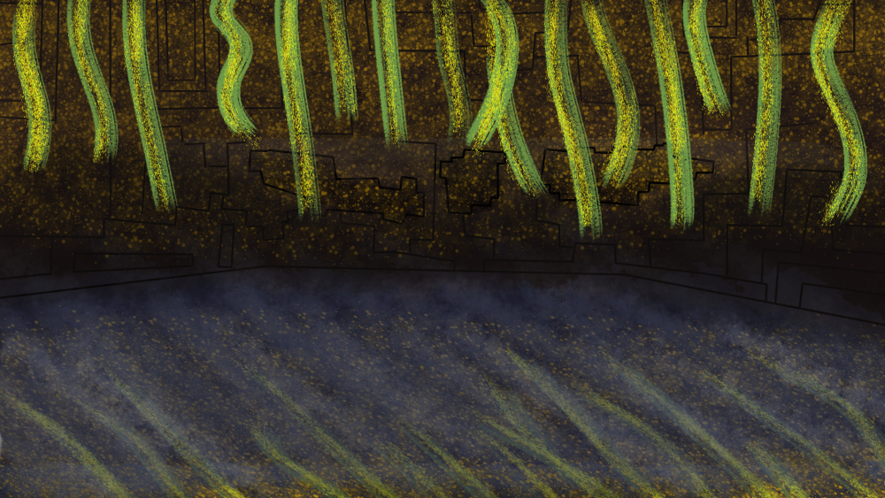
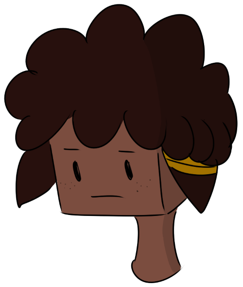

Meet the crew!
Get to know the characters you’ll be teamed up with in your story!

Get to know the characters you’ll be teamed up with in your story!


From his earliest days, Axel loved to farm. He maintained a small-scale dairy he had built right next to where he first spawned. He lived in a cave, cared for a cat he called Spots, and traded food in the local village for various goods to support himself. One day, while expanding and renovating his cave, Axel mined straight down for about ten blocks, before plummeting into a dark casm. A haunting of endermen took advantage of the opening to invade his home, and in an effort to defend it he accidently killed Spots. Overwhelmed by the disaster, Axel ran away from his former life, and began spending his days sleeping in a bed on the town plaza in the Plains Biome. It was here that he first met Jesse, who pulled him out of his misery and gave him a new home. Once he emotionally recovered, Axel started a bakery.



From her earliest days, Olivia loved to organize. She loved to sort things, invent things, and make things more efficient. This made for a competent career as a librarian in Town Hall’s basement, where she spent her time sorting through all the odds and ends kept out of the open. At first she was never happier, but as time went on she found herself dissatisfied with many aspects of her life. One, she had nobody to talk to, which made her job in the basement very lonely. Two, the directorial staff of Town Hall frequently forced Olivia to work overtime, throwing any unused items downstairs and making a mess at every opportunity. Eventually, Olivia quit her job and sought after people who would respect her needs. She found them in Jesse and Axel, and in exchange for their support she fixed up Axel’s bakery.


Lukas spent his earliest days as a project manager, building spruce-wood cabins for townsfolk to take shelter from night-time monsters. It was during this time he learned to take leadership, and cultivated a love of architecture. When a nightly mob attack turned months of hard work into a massive crater, Lukas revised his ambitions and left his job to somebody else. He decided to find catharsis at the Mob Grinder (a materials factory in the Plains Biome), where he rediscovered his love of planning and execution. In time, Lukas realized he could live his dream on a smaller, simpler scale. He recruited Aiden for this audacious business venture, and the two of them have worked together ever since.


From her earliest days, Maya learned many tools of her trade from an old swamp-dweller. Her natural talent with potions and enchantments led to the swamp-dweller accelerating her education, until one day she surpassed his abilities and set out on her own. Her growing inventory of artifacts, rarities, and other trophies became the envy of those around her, and soon she made many enemies. When she met Lukas and Aiden, she decided to take them under her wing, teaching them the secrets of mass success. In exchange, they introduced her to a better community and made her a part of their team. It was then that they named themselves The Ocelots.


.png "Act Three")
Aiden's earliest moments were spent in a large dent outside the flat town with no buildings, home to griefers whose prime pastime was "pwning noobs". They would find someone new, and throw their garbage at them until they died. The garbage included TNT, eggs, arrows, balls of slime, splash-potions with unknown effects, and buckets of lava. When the "noob" respawned, they offered no reprieve. Aiden did everything in his power to escape, at last digging by hand underground until he tunneled into an abandoned home. He found a wooden sword in a chest and fought back, but was later chased for many chunks as a "sore loser", until at last he crossed two biomes and escaped. He became an avid student of the world and its workings, but something inside him swore vengeance on those who were so desperate to steal his life away.


Petra spent her earliest days familiarizing herself with rejection. Her attempts at a social life went caput at the slightest inconvenience, and she had a way of making messes whenever she tried to stay in one place for too long. To compensate, she made herself useful. She learned how to find things that people wanted, and her utility forced others to accept her, even when she showed poor sportsmanship. As she expanded a reluctant clientele, Petra grew more comfortable with manipulating, backstabbing, and haggling for a more profitable outcome, even if it hurt her chances at making friends. As life in her chosen residency became more deeply-rooted, Petra’s methods became less extreme, and she embraced a more generally adventurous line of work.


From your earliest days, you’ve loved to explore. There are so many natural wonders of the world, and you’ve wanted to see every single one of them. You would sprint as far as you could, and it didn’t matter if you couldn’t remember where you had been before. Eventually, you began to see a pattern; you would spend the day discovering new things about the world around you, but then nightfall would come, and you could never get a decent shelter built in time. You would die alone in the dark, waking up the next day exactly where you started out before, with no memory of what you had been up to. This started to get old, so you settled down in a treehouse close to town, where you met your friends Axel and Olivia. The three of you have been running a successful bakery ever since.


From your earliest days, you’ve loved to explore. There are so many natural wonders of the world, and you’ve wanted to see every single one of them. You would sprint as far as you could, and it didn’t matter if you couldn’t remember where you had been before. Eventually, you began to see a pattern; you would spend the day discovering new things about the world around you, but then nightfall would come, and you could never get a decent shelter built in time. You would die alone in the dark, waking up the next day exactly where you started out before, with no memory of what you had been up to. This started to get old, so you settled down in a treehouse close to town, where you met your friends Axel and Olivia. The three of you have been running a successful bakery ever since.